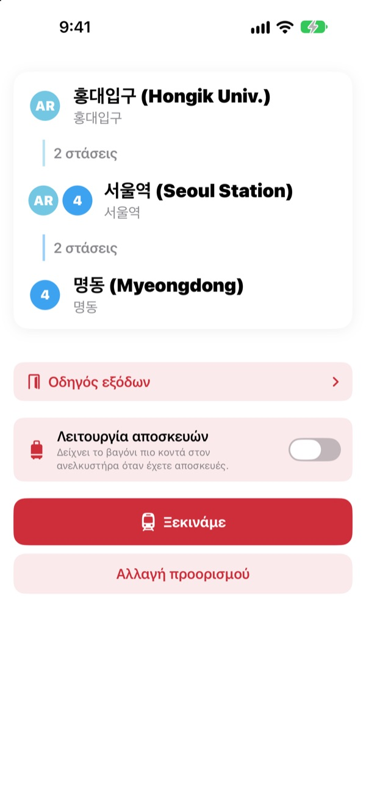
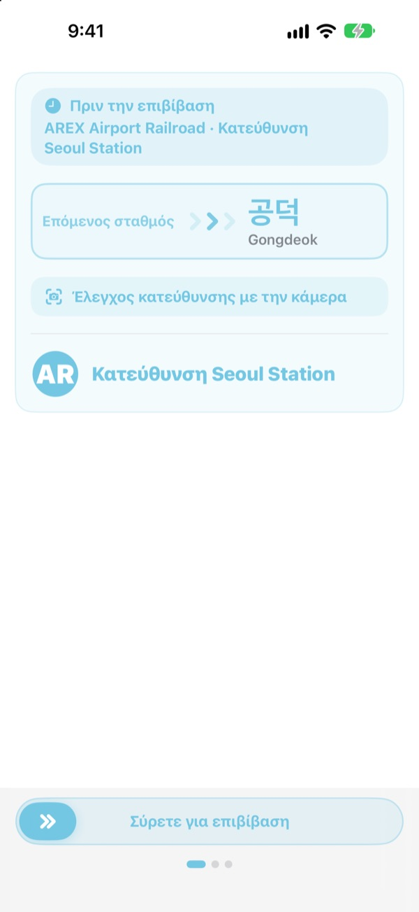
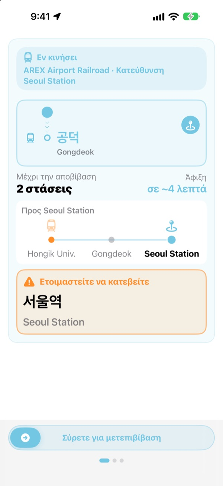
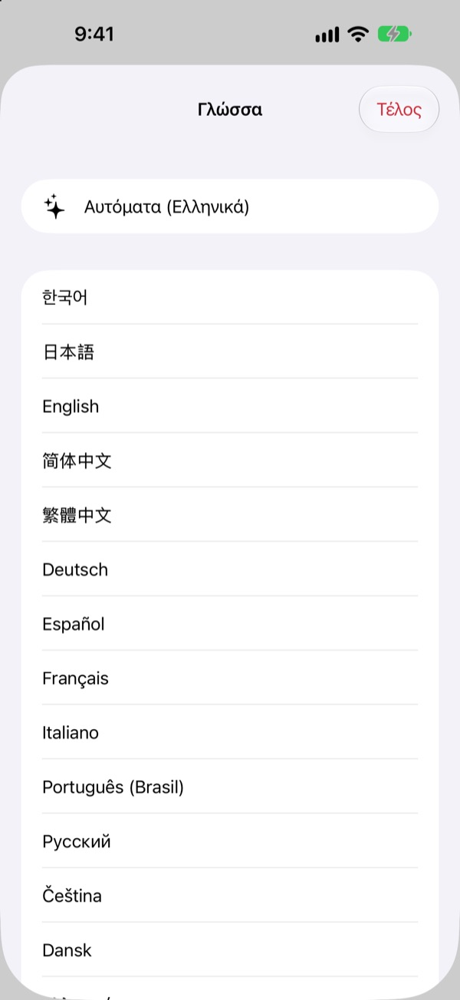

Η σωστή αποβάθρα.
Η σωστή στάση.
Επιλέξτε αφετηρία και προορισμό και το KORA σάς λέει ποιο τρένο να πάρετε, γραμμένο ακριβώς όπως στην πινακίδα της αποβάθρας. Στη διαδρομή παρακολουθεί τον σταθμό σας και σας ειδοποιεί πότε να κατεβείτε.
Η αναζήτηση διαδρομής, η κατεύθυνση του τρένου και οι αφίξεις σε πραγματικό χρόνο είναι δωρεάν.

Κάντε μια δοκιμαστική διαδρομή
Βρίσκεστε στον σταθμό Hongik Univ. της γραμμής AREX. Διαλέξτε πού θα κατεβείτε και πατήστε «Ξεκινάμε» για να δείτε την κατεύθυνση και τις ειδοποιήσεις αποβίβασης, όπως στην εφαρμογή.
Βρεθήκατε ποτέ στην αποβάθρα χωρίς να ξέρετε ποιο τρένο να πάρετε;
Οι εφαρμογές χαρτών σάς δίνουν τη γραμμή, αλλά στην αποβάθρα υπάρχουν μόνο πινακίδες με ονόματα σταθμών που δεν έχετε ακούσει ποτέ. Αν μπείτε στη λάθος κατεύθυνση, γυρνάτε πίσω αρκετές στάσεις. Αν χάσετε την ανακοίνωση, προσπερνάτε τη στάση σας. Το KORA ονομάζει το τρένο σας όπως η πινακίδα και σας προειδοποιεί πριν από τη στάση σας.
Με τις λέξεις της πινακίδας
Το τρένο που πρέπει να πάρετε εμφανίζεται ακριβώς όπως γράφεται ο προορισμός του στην αποβάθρα και στο τρένο. Έχετε αμφιβολία; Στρέψτε την κάμερα στην πινακίδα της αποβάθρας ή στην ένδειξη προορισμού του τρένου και το KORA σας λέει αμέσως αν είναι η σωστή κατεύθυνση.
Η αναγνώριση κειμένου γίνεται εξ ολοκλήρου στο iPhone σας.

Δεν θα χάσετε τη στάση σας
Το KORA συνδυάζει αφίξεις σε πραγματικό χρόνο, GPS, τις αναχωρήσεις και στάσεις του τρένου και τις ανακοινώσεις μέσα στο βαγόνι για να ξέρει πού βρίσκεστε. Καθώς πλησιάζει η στάση σας λαμβάνετε «Ετοιμαστείτε να κατεβείτε» και μετά «Κατεβείτε τώρα!» με δόνηση.
Η πρόοδος φαίνεται και στην οθόνη κλειδώματος και στο Dynamic Island.

23 γλώσσες, τα κορεατικά ονόματα μένουν
Χρησιμοποιήστε όλη την εφαρμογή σε 23 γλώσσες· ξεκινά στη γλώσσα του iPhone σας. Τα ονόματα των σταθμών εμφανίζονται στα κορεατικά δίπλα στη λατινική γραφή των πινακίδων, ώστε να τα αναγνωρίζετε αμέσως στην αποβάθρα.

Ξεκινήστε σε τρία βήματα
- 1
Ορίστε αφετηρία
Το GPS βρίσκει τον πιο κοντινό σταθμό, ή διαλέξτε μόνοι σας.
- 2
Διαλέξτε προορισμό
Μετεπιβιβάσεις, στάσεις και το σωστό τρένο εμφανίζονται αμέσως.
- 3
Πατήστε «Ξεκινάμε»
Η οθόνη και μια δόνηση σάς λένε πότε να κατεβείτε.
Σε τι χρησιμεύουν οι άδειες
- Τοποθεσία
- Εύρεση του πιο κοντινού σταθμού
- Κάμερα
- Ανάγνωση πινακίδων και ενδείξεων προορισμού για έλεγχο κατεύθυνσης
- Μικρόφωνο και αναγνώριση ομιλίας
- Κατανόηση του ονόματος σταθμού και της πλευράς των θυρών από τις ανακοινώσεις
- Κίνηση και φυσική κατάσταση
- Ανίχνευση αναχωρήσεων και στάσεων για πιο ακριβή τρέχοντα σταθμό
Όλες οι άδειες είναι προαιρετικές. Χωρίς αυτές διαλέγετε μόνοι σας σταθμούς και έχετε κανονικά διαδρομή και ειδοποιήσεις αποβίβασης. Τοποθεσία, κάμερα και ανακοινώσεις επεξεργάζονται στη συσκευή σας και ποτέ δεν καταγράφονται, αποθηκεύονται ή αποστέλλονται.
Η εύρεση διαδρομής είναι πάντα δωρεάν. Η καθοδήγηση εν κινήσει είναι KORA Pro.
Δωρεάν
- Αναζήτηση διαδρομής και μετεπιβιβάσεις
- Η πινακίδα προορισμού του σωστού τρένου
- Αφίξεις σε πραγματικό χρόνο
- Έλεγχος κατεύθυνσης με την κάμερα
- Τρέχων σταθμός και ειδοποίηση αποβίβασης στην οθόνη
- Όλες οι λειτουργίες Pro στις τρεις πρώτες διαδρομές
KORA Pro
- Σε κάθε διαδρομή: καθοδήγηση στην οθόνη κλειδώματος, αναγνώριση ανακοινώσεων και δόνηση κατά την αποβίβαση
- Οδηγός εξόδων: τι υπάρχει σε κάθε έξοδο των γραμμών 1 έως 8 της Σεούλ
- Υπενθύμιση τελευταίου τρένου στις γραμμές 1 έως 9
- Λειτουργία αποσκευών: το βαγόνι πιο κοντά στο ασανσέρ στις γραμμές 1 έως 8
Πληρώνετε μία φορά και το κρατάτε. Δεν είναι συνδρομή.
Όταν τελειώσουν οι δωρεάν διαδρομές, μπορείτε να συνεχίσετε να ταξιδεύετε. Η πρόοδος στην οθόνη μένει· σταματούν προσωρινά μόνο η οθόνη κλειδώματος, η αναγνώριση ανακοινώσεων και η δόνηση.
Συχνές ερωτήσεις
Η εφαρμογή δεν βρίσκει τον σταθμό μου ή δείχνει λάθος.
Ανοίξτε Ρυθμίσεις > Απόρρητο και ασφάλεια > Υπηρεσίες τοποθεσίας > KORA, επιλέξτε «Κατά τη χρήση της εφαρμογής» και ενεργοποιήστε την «Ακριβή τοποθεσία». Υπόγεια ή σε μεγάλα κτίρια το GPS μπορεί να σφάλλει: πατήστε την κάρτα του τρέχοντος σταθμού πάνω και διαλέξτε μόνοι σας. Όλα λειτουργούν και χωρίς πρόσβαση στην τοποθεσία.
Πώς λειτουργεί ο έλεγχος με την κάμερα;
Όταν εμφανιστεί η διαδρομή, ανοίξτε τον έλεγχο με την κάμερα και γεμίστε το κάδρο με την πινακίδα της αποβάθρας ή την ένδειξη προορισμού του τρένου. Λειτουργεί καλύτερα με το κορεατικό κείμενο. Αν η πινακίδα είναι σκοτεινή, μακριά ή πολύ λοξά, πλησιάστε και στοχεύστε κατευθείαν. Το αποτέλεσμα είναι βοήθημα· αν έχετε αμφιβολία, κοιτάξτε και τις πινακίδες του σταθμού.
Δεν εμφανίζονται οι αφίξεις σε πραγματικό χρόνο.
Τα δεδομένα προέρχονται από το Seoul Open Data Plaza, χρειάζονται σύνδεση και υπάρχουν κυρίως για γραμμές της μητροπολιτικής περιοχής της Σεούλ. Χωρίς σύνδεση ή δεδομένα, το KORA περνά αυτόματα σε εκτίμηση με βάση δρομολόγια, GPS και επιταχυνσιόμετρο και συνεχίζει να σας καθοδηγεί. Η αναζήτηση διαδρομής λειτουργεί χωρίς ίντερνετ.
Η ειδοποίηση αποβίβασης ήρθε λίγο νωρίς ή αργά.
Υπόγεια το GPS είναι αδύναμο και ο τρέχων σταθμός μπορεί να καθυστερεί. Αν επιτρέψετε το μικρόφωνο, το KORA διορθώνει τη θέση με τις ανακοινώσεις στο τρένο. Οι ειδοποιήσεις είναι βοήθημα, οπότε ακούτε και τις ανακοινώσεις και κοιτάζετε τις πινακίδες.
Πώς αλλάζω γλώσσα;
Το KORA ξεκινά στη γλώσσα του iPhone σας. Πατήστε παρατεταμένα μια κάρτα σταθμού στην κύρια οθόνη (τρέχων σταθμός ή προορισμός) για να ανοίξει η επιλογή ανάμεσα σε 23 γλώσσες.
Η Ζωντανή δραστηριότητα δεν εμφανίζεται στην οθόνη κλειδώματος.
Ελέγξτε στις Ρυθμίσεις > Εφαρμογές > KORA (σε παλαιότερο iOS, Ρυθμίσεις > KORA) ότι οι Ζωντανές δραστηριότητες είναι ενεργές. Εμφανίζεται μόλις ξεκινήσετε την καθοδήγηση και τελειώνει αν κλείσετε εντελώς την εφαρμογή. Το Dynamic Island υπάρχει μόνο στα μοντέλα iPhone που το διαθέτουν.
Ποιες πόλεις καλύπτονται;
Περίπου 930 σταθμοί στη μητροπολιτική περιοχή της Σεούλ (Σεούλ, Γκιονγκί και Ιντσόν, μαζί με GTX-A, AREX, τη γραμμή Shinbundang και τον ελαφρύ σιδηρόδρομο), στο Πουσάν, το Νταεγκού, το Γκουανγκτζού και το Νταετζόν. Αλλάζετε πόλη με τα κουμπιά περιοχής στο πάνω μέρος της επιλογής σταθμού.
Μπορώ να το δοκιμάσω πριν από το ταξίδι;
Ναι. Διαλέξτε μόνοι σας αφετηρία και προορισμό και δείτε διαδρομές, μετεπιβιβάσεις και κατεύθυνση από οπουδήποτε στον κόσμο.
Είναι το KORA Pro συνδρομή;
Όχι. Είναι εφάπαξ αγορά που κρατάτε και λειτουργεί με την Οικογενειακή κοινή χρήση. Αν εγκαταστήσετε ξανά την εφαρμογή, πατήστε «Επαναφορά αγοράς» στην οθόνη Pro.
Τι γίνεται με τα δεδομένα μου;
Χωρίς λογαριασμό και χωρίς διαφημίσεις. Τοποθεσία, κάμερα και αναγνώριση ανακοινώσεων επεξεργάζονται στη συσκευή σας και ποτέ δεν αποθηκεύονται ή αποστέλλονται. Συλλέγουμε μόνο ανώνυμα στατιστικά χρήσης για να βελτιώνουμε την εφαρμογή.
Είναι προσβάσιμη η εφαρμογή;
Το KORA υποστηρίζει VoiceOver και μεγαλύτερο κείμενο. Οι προτάσεις για καλύτερη προσβασιμότητα είναι πάντα ευπρόσδεκτες.
Λείπει κάποιος σταθμός, φαίνεται λάθος ένα όνομα ή έχετε άλλη ερώτηση; Γράψτε μας στο mizzking75@gmail.com. Αναφέρετε την έκδοση της εφαρμογής, το μοντέλο iPhone και τους σταθμούς που χρησιμοποιήσατε για πιο γρήγορη απάντηση.